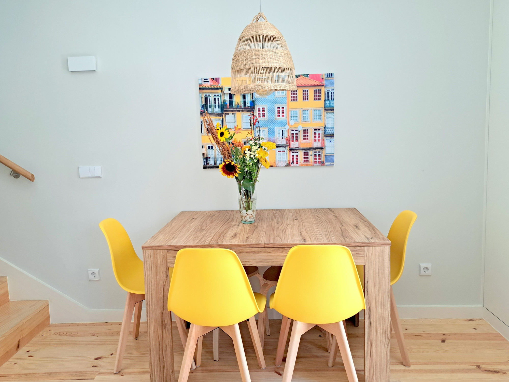
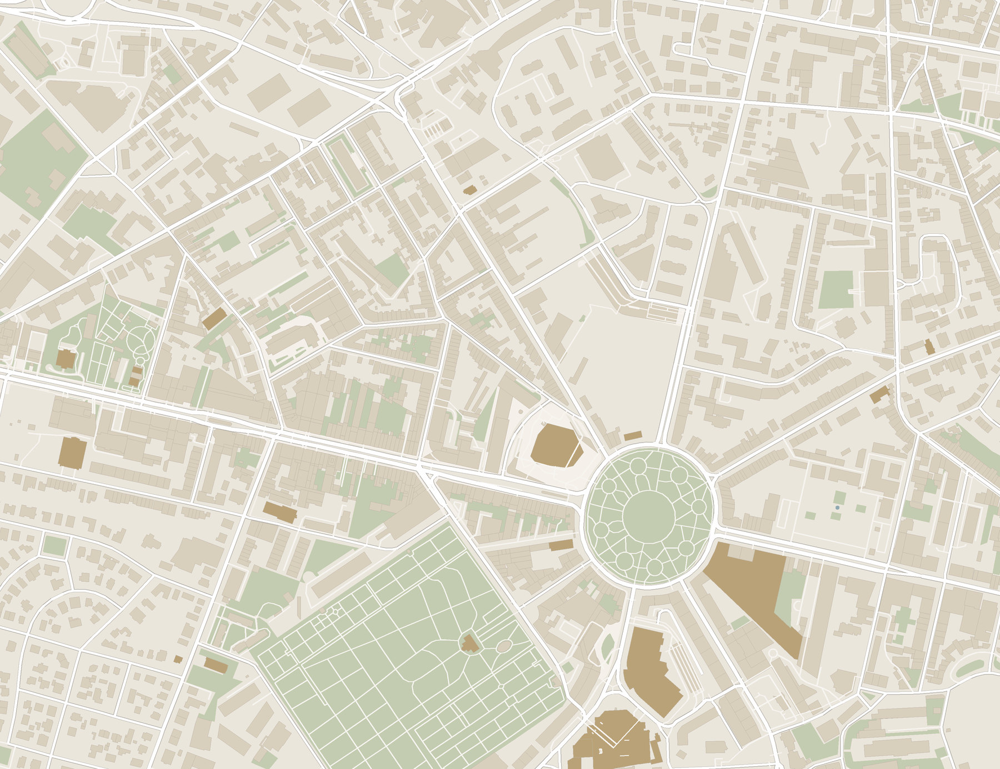
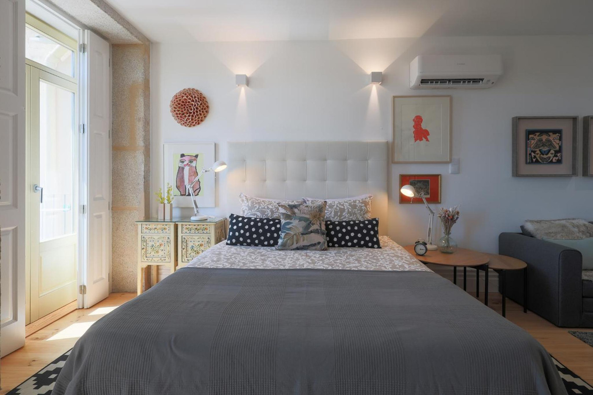

Boavista · Porto
Boavista Luxury Villas
- 6pessoas
- 100 m²de área
- 3quartos
- 1casa de banho
- Terraço privado
- Entrada privada
- Ar condicionado em todas as divisões
- Wi-Fi gratuito
- Cozinha equipada
- e mais 7
01
Uma moradia só vossa, com terraço.
Moradias independentes construídas em 2023, cada uma com entrada própria, terraço e ar condicionado em todas as divisões.
Três quartos (dois de casal e um com duas camas), sala com sofá-cama, cozinha equipada e uma casa de banho com duche.
Felt much more personal than staying in a hotel.
02
Da sala ao terraço.
18 fotografias
Sala e cozinha 3
Quarto de casal 3
Quarto no sótão 2
Quarto de duas camas 2
Casa de banho 2
Terraço 3
A entrada 3
03
O que a casa oferece.
- Terraço privado
- Entrada privada
- Ar condicionado em todas as divisões
- Wi-Fi gratuito
- Cozinha equipada
- Máquina de lavar loiça
- Máquina de lavar roupa
- Máquina de café
- Sofá-cama na sala
- Mesa e cadeiras no terraço
- Televisão
- Secador de cabelo

Avenida da BoavistaRua de Pedro HispanoAvenida da FrançaRua de Oliveira MonteiroRua Domingos SequeiraRua de AgramonteRua Guerra Junqueiro Casa da MúsicaRotunda da BoavistaMercado do Bom SucessoIgreja do Santíssimo SacramentoMuseu Judaico do Porto Boavista Luxury Villas 250 m04
A quatro minutos da Casa da Música.
Rua de 5 de Outubro, 323, 4100-175 Porto
- Casa da Música350 m
- Metro Casa da Música400 m
- Rotunda da Boavista450 m
- Jardins do Palácio de Cristal2 km
- Ribeira3,5 km
- Praias da Foz5 km
- Aeroporto11 km
Distâncias calculadas pelo Booking.
Como chegar05
Antes de chegar.
- Check-in
- 16:00 – 23:30
- Check-out
- Até às 11:00
- Fumar
- Não
- Festas
- Não
- Animais
- Não
- Silêncio
- 22:00 – 08:00
- Hora de chegada
- Avisar com antecedência
- Estacionamento
- Não há no local
Reservar
Também emBooking.com Airbnb
Outras casas no Porto.

Cedofeita
Cedofeita Charming Flat
Apartamento T1 · até 2 pessoas
9,5 77 avaliações no Booking Ver a casa
Sé e Fontainhas
Porto Cathedral
Apartamento T2 · até 4 pessoas
9,1 80 avaliações no Booking Ver a casa
Sé e Fontainhas
Porto Cathedral II
Apartamento T3
9,0 31 avaliações no Booking Ver no Booking